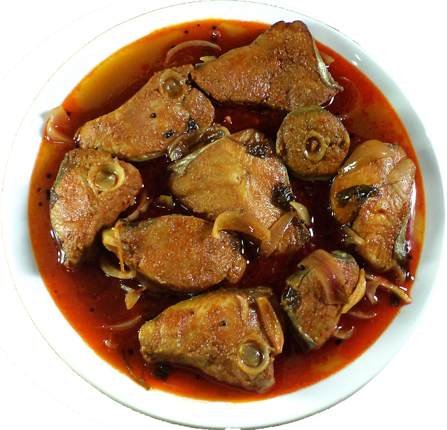

Home
Adobo Recipe

Description
Adobo is a popular Filipino dish and cooking process featuring meat (like chicken, pork, or beef), seafood, or vegetables simmered in a savory and tangy sauce made from vinegar, soy sauce, garlic, and peppercorns.
Ingredients
- 1 cup distilled white vinegar
- 1 cup soy sauce
- ½ cup ketchup
- 1 tablespoon minced garlic
- 3 bay leaves
- 1 teaspoon fresh-ground black pepper
- 2 ½ pounds lean pork, cut into 1 inch cubes
- 1 pound small green beans, trimmed (Optional)
Steps
- Stir together the vinegar, soy sauce, ketchup, garlic, and bay leaves in a large saucepan.
- Add the cubed pork, and bring to a boil over high heat. Reduce heat to medium-low, cover, and simmer until the pork is tender, about 2 1/2 hours.
- Stir occasionally. If using the green beans, add them during the last half hour of cooking.